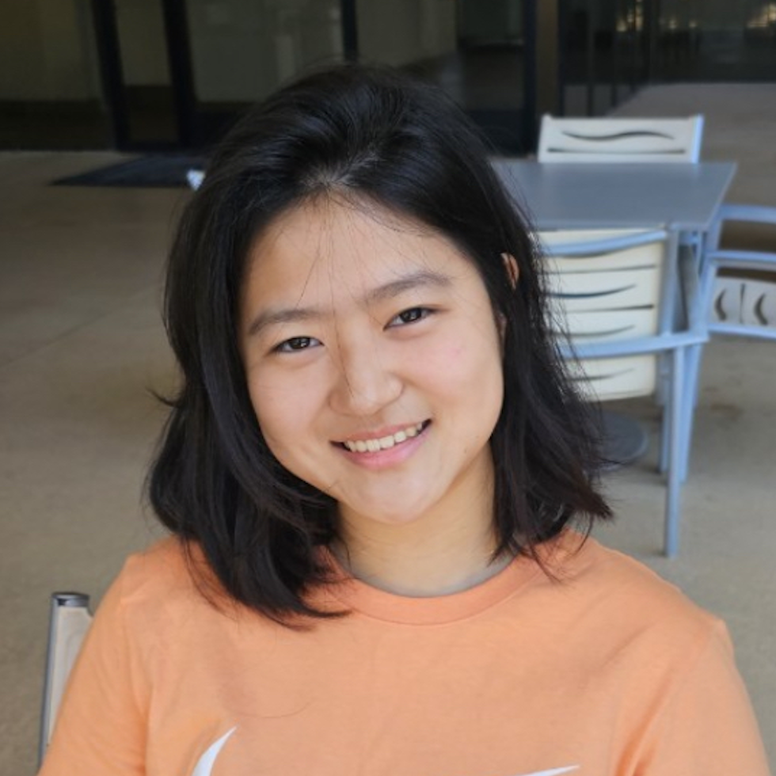

Board Member
Join The Team: Life as a Sunrise Venture Board Member
Since its conception in September 2023, Sunrise Venture has brought free entrepreneurial education to over 120 students from 19 different high schools in California, hosted a pitch summit featuring 14 finalist teams and a closing speech from Irvine Mayor Farrah Khan and awarded $1900 cash to student pitch competition winners. But this wouldn’t have been possible without the Sunrise Venture teen-led team. Questioning whether or not Sunrise Venture is for you? Here is the behind the scenes of being a Sunrise Venture board member from chief technology officer & NorCal director of publicity Sunny Moon.

Sunny Moon
Moon was one of the first Sunrise Venture board members when Ellen invited her to the team back in November. Throughout her time, Moon developed the Sunrise Venture website and is an essential asset to the team regarding technological-based and publicity tasks.
I knew [Sunrise Venture] was going to be an amazing experience,
Moon said. To me it was an opportunity to work in a professional environment and learn to communicate with others.
Although the Sunrise team was newly founded, Moon and her peers knew that their effort could make a valuable impact within the community and share the Sunrise Venture vision: increasing accessibility toward entrepreneurship opportunities.
We remind ourselves that we are not just high schoolers,
Moon said, we are and can be much more. We are professionals, experienced and capable.
With the Sunrise Venture board application deadline approaching, Moon highlights both the learning opportunities and memories Sunrise Venture board members make along the way.
If you are committed, you will get so much out of this experience,
Moon said, including responsibility and accountability. You are the leader of the tasks you are assigned to. You decide things for yourself and you pave your path, there are a lot of possibilities.
Amber Chih
Chih was also one of the first board members of Sunrise Venture after finding Ellen’s project compelling and having faith in her abilities to lead the group to success. Although it was a new experience for her to be a part of, Chih was ready to work alongside the team by running the social media page and helping out with marketing and publicity tasks.
At the time,
Chih said, as I was a freshman with almost no experience in entrepreneurship, I saw it as an opportunity for me to better understand the field.
Throughout her time as a Sunrise Venture board member, Chih embraced the Sunrise experience as she explored the ins and outs of the business community as well as gained invaluable skills such as time management and collaboration.
After being on Sunrise Venture,
Chih said, I realized that there’s so much more that I’m interested in, whether it be through the goals I set in high school or my future aspirations towards my career path.
Chih emphasizes how fulfilling and fun it is to be a Sunrise Venture board member for committed high school students interested in applying to join the team.
To me,
Chih said, being a Sunrise Venture board member means taking on the responsibility of driving our generation forward through entrepreneurial programs.